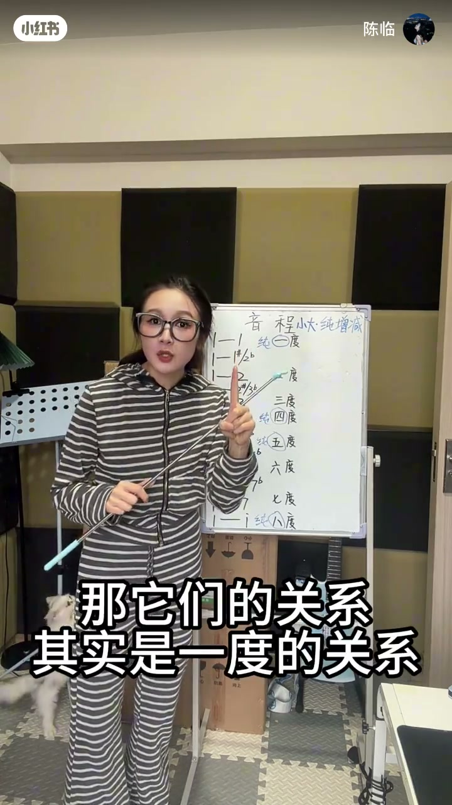
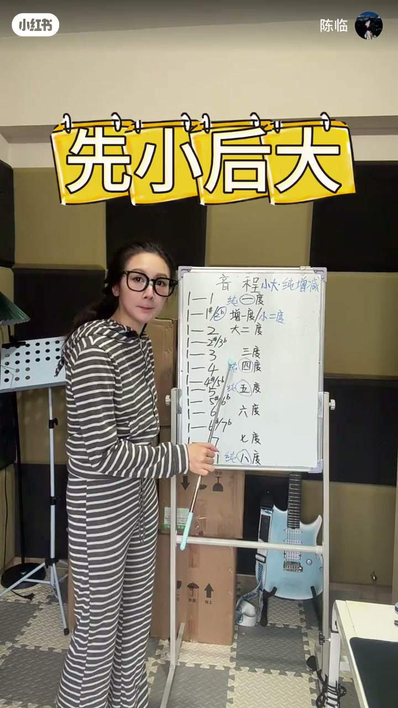
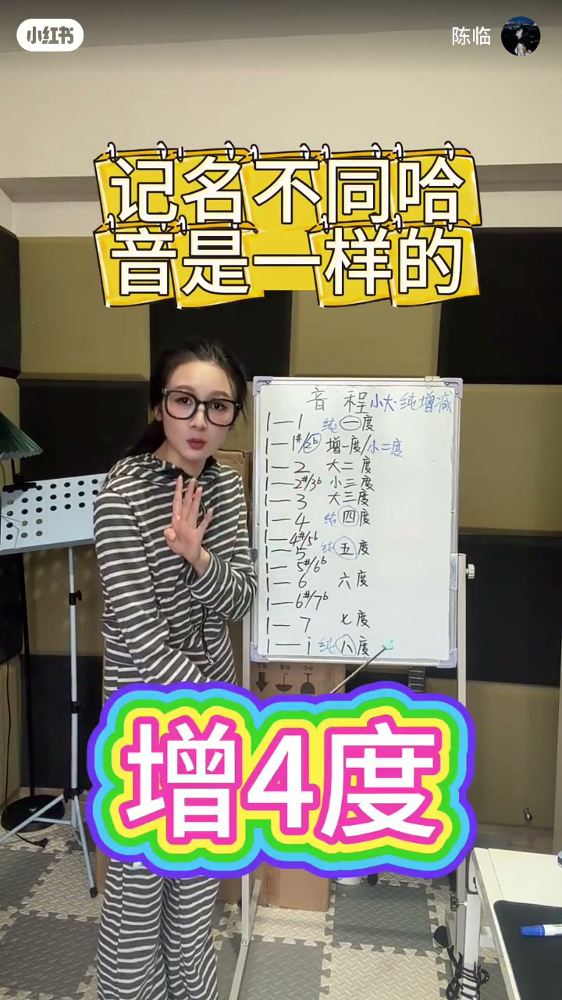
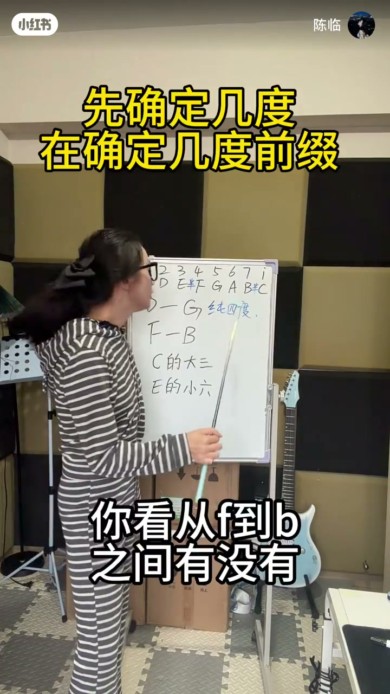
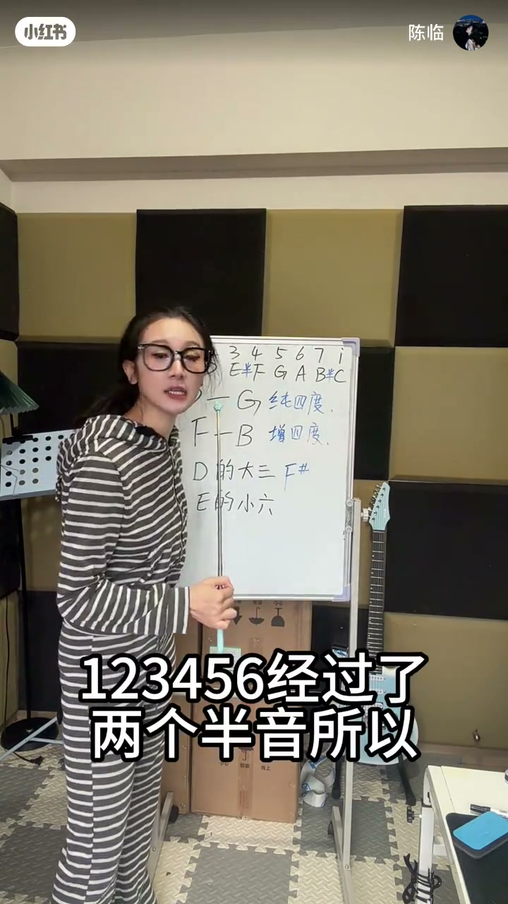

内容要点
陈临白板讲音程命名：先数「几度」，再定前缀。1458 走纯／增／减，其余走大／小；同音异名（升 do vs 降 re）会把一度变成增一度或小二度。中段口播有空洞，后半用半音计数练 F–B、B–E 等。作者自评「其实算两集」，建议多看两遍。
知识结构
同音继承升／降写法：增一度 vs 小二度，像兄妹与姐弟不同称呼。
不涉及1458用大小；涉及1458改纯增减（增四／减五等）。
一定先记规则；先确定几度，再定前缀。
从给定根音数度数与半音，推出大二／小六等答案。
音程名=度数+性质前缀；1458 与「其他音」两套前缀不要混用；同音异名会改变关系名，所以先看你「记在哪里」。
00:00-01:10增一度与小二度：同人不同称呼
开场从「音程是什么」切入，白板列出 1→纯一度、2→大二度…对照表。举 do 到升 do／降 re：继任者写法不同，关系分别是增一度与小二度——「我和我哥／我和我弟能一样吗」。
do 到 re 则是大二度。这是后面所有例子的模板：先看两端音名怎么写，再谈距离。

01:10-02:201458 才搞纯增减，其他人走大小
按顺序填：小三、大三；轮到四五又撞上 1458。do 到升 fa 是增四度；若记成降 sol 则是减五度。升 sol／降 la 一类则在增五与小六之间摇摆，取决于记在哪里。
有人追问为什么不叫增六／小七：她强调「只有 1458 神经病」——只有涉及这四个音级才用纯增减，其余一律大小，简单明了。


02:20-04:00先定几度，再定前缀
黄字强提醒：一定要先把规则记下来再看后面；流程是「先确定几度，在确定几度前缀」。白板继续用字母列 C–G 纯五、F–B 增四等例子。
中段部分口播 ASR 残缺，以白板列表与字幕为准；不要把空洞段落臆造成公式。

04:00-06:18半音计数落地练习
后半进入具体计数：从某音起 123456，看中间经过几个半音，从而判断大／小性质。片尾从 G 起推小六等练习，呼应「多看两遍」。
作业感很强：会背表不够，要会从任意起点自己数。

完整转录（80段）
以下文本由 Whisper medium 模型自动转录，可能存在少量识别误差，已尽可能修正。
阴陈陈是什么
哥这四个人
其他人都是大小的关系
我们来看这个
多到深多或降远
当继民继承前面这个深多的时候
还是多 对不对
那他们的关系其实是一度的关系
那么这里他们的关系是增一度
可是如果继民继承了降远呢
只是继民不同
我还是我
但是我跟我哥的关系
和我和我弟的关系能一样吗
不一样
一个叫兄妹
一个叫姐弟
这里能不能明白
所以当它是深多的时候
他们的关系是增一度
当它是降远的时候
他们的关系是小二度
能不能理解
那么多到远的关系就是大二度
咱们以至
只要不涉及这个1458
都是小大的关系
所以咱们按顺序填
这里什么关系
嗯 小三度
这里呢 大三度
到这里了
又涉及到这个1458了
对不对
那个这个45
那该怎么填啊
如果说是多到深发
他们关系是多到四度的关系
是不是四度
所以它这里如果是深发
就是增四度
如果是降缩呢
那它就是减五度
B这里是增五度或小六度
取决于什么
取决于你记在哪里
你如果记深缩
它就是增五度
你如果记以降拉
它就是小六度
对不对
那有人就要问了
老师
老师这里为什么不叫增六度
或小七度呢
这里为什么不叫增二度
或小三度呢
老师啊
为什么
我开头是不是跟你说了
只有这个1458它有弊
它神经病
它系多
只有涉及到这四个人的时候
才搞这种纯增减
发送
其他人都是大小关系
简单明了
对不对
是不是啊
好 接下来呢
没有 同学们
那有人就要问了
我都知道了
我刚才怎么办啊
不要慌
家是成林就你来了
没错
中间只经过了一个半音
所以f的小六是降低那从G开始1